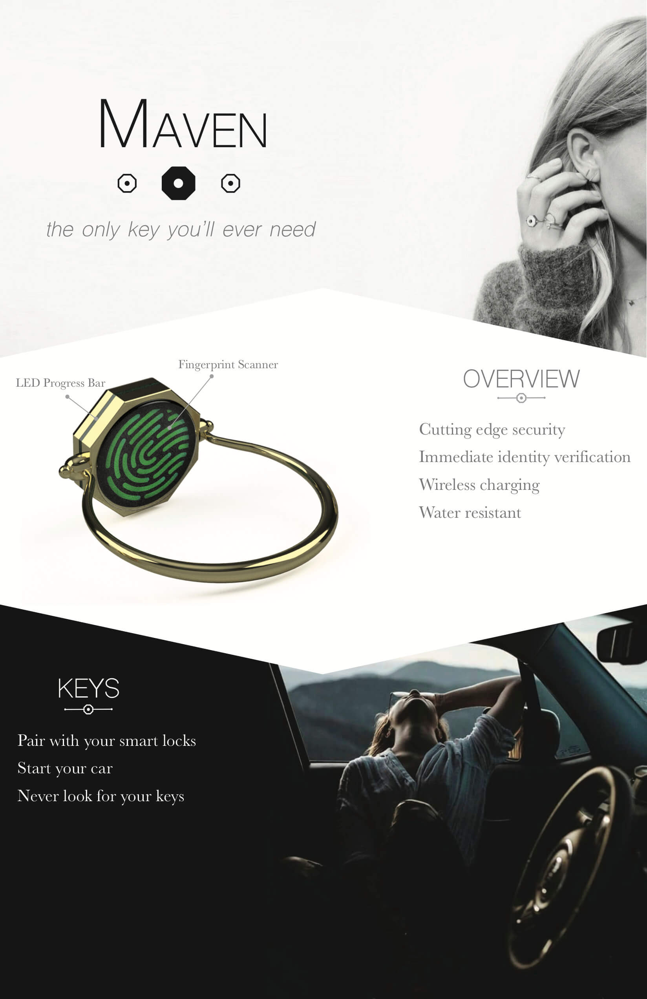
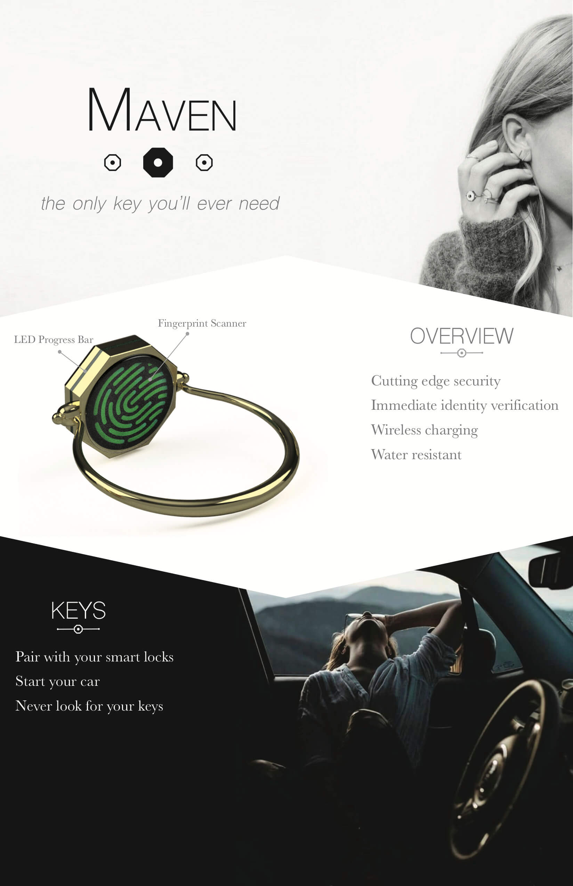

Maven is an imagined wearable technology company that aims to make its new smart ring just as fashionable as it is functional. Wearable technology can often look clunky. I wanted the design of this ring to be clean and subtle. The branding is aimed towards fashion savy women, a group that often gets overlooked when it comes to wearable technology.
 

 2019 Sonia Szeton | All Rights Reserved
2019 Sonia Szeton | All Rights Reserved